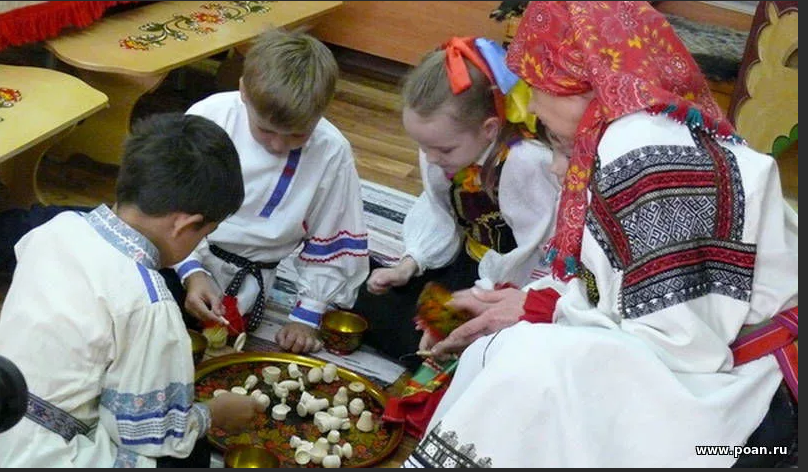

Русские народные игры
Ручеек
1Участники разделяются на пары (чаще разнополые).
2Взявшись за руки, они встают в две колонны на некотором расстоянии друг от друга.
3Поднимают сцепленные руки высоко над головами, образуя тоннель.
Варианты игры:
1Есть водящий. Он входит в коридор, где, беря за руку, выбирает себе пару, разбивая одну из старых пар. Новая пара встаёт в противоположной входу стороне «ручейка», а освободившийся человек становится водящим.
2Распространена разновидность игры, при которой пробегающую в тоннеле пару могут останавливать другие игроки, опуская сцепленные руки. В этом случае пара должна поцеловаться.
3Во втором варианте чётное количество участников и пары постоянны. Просто пары с одного конца тоннеля переходят по нему в другой конец.
Часто игра идёт под музыку. Чем быстрее течёт «ручеёк», тем веселее.

Бирюльки
Это игра известна издревле, однако, ее правила знают сейчас очень немногие. Смысл заключается в том, что берется от 60 до 100 палочек длиной 10 см. Их кладут в мешок, а затем высыпают на ровную поверхность. Палочки, высыпаясь, ложатся беспорядочно и задача игры заключается в том, что каждый по очереди убирает по одной бирюльке, стараясь не потревожить те, которые находятся рядом. Побеждает тот, у кого, после разбора всей кучи, насчитывается больше всего собранных «трофеев». Чтобы сделать игру еще интереснее, можно палочки сделать в виде лопатки, копья или ложки. За такие бирюльки начисляется большее количество очков.

Золотые ворота
Эта игра отличается большой динамичностью и рассчитана не столько на ловкость ее участников, сколько на их везение. Правила «Золотых ворот» следующие: два игрока становятся напротив друг друга и соединяют руки таким образом, чтобы получились ворота. Остальные участники берутся за руки и по очереди проходят через них. Игроки, составляющие ворота при этом напевают:
Золотые ворота
Пропускают не всегда!
Первый раз прощается,
Второй раз запрещается,
А на третий раз
Не пропустим вас!
После того, как заканчивается песня они опускают руку, и те игроки, которые попались также становятся воротами. Таким образом, постепенно уменьшается цепочка участников. Игра заканчивается в тот момент, когда все становятся «воротами».

Поймай рыбку
Чтобы победить в этой игре нужно обладать хорошей реакцией и скоростью. Смысл этой забавы в том, что участники образуют круг, в центре которого стоит «вода» с веревкой и вращает ее по полу вокруг своей оси. Задача участников — подпрыгивать над веревкой. Тот игрой, который зацепится за нее, выбывает из игры.

Горячее место
Эта забава прекрасно подходит для тех, кто любит играть в догонялки. Ее смысл заключается в том, что в центре площадки обозначается место, которое будет называться горячим. «Вода» должен стараться поймать участников, стремящихся попасть в это место. Тот, кого ловят, помогает «воде». Если игроку удается достигнуть «горячего места», он может там отдыхать сколько пожелает, однако, выйдя за его пределы, вновь должен будет убегать от «воды». Игра длится до тех пора, пока не поймают всех игроков.